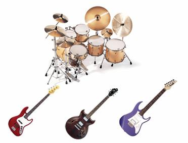

Genero que incluye diversos estilos como pop, rap,rock entre otros. Se refiere especialmente a la musica popular de Corea del Sur. Aunque el K-pop generalmente se refiere a la música popular surcoreana, algunos consideran que es un género que abarca un amplio aspecto de elementos musicales y visuales.25 El Instituto Nacional de Audiovisual francés define el K-pop como una «fusión de música sintetizada, rutinas de baile y ropa colorida de moda».
La historia del K-pop como género musical se pudo notar a partir de 1970, cuando se observó una transformación en la que muchos de los músicos ya graduados se vieron influenciados por la cultura estadounidense y además por una cultura o movimiento hippie, logrando un cambio sustancial en los ritmos hasta ahora conocidos.
K-pop" es una abreviación de Korean popular music, en inglés o música popular coreana en español, es un género musical que incluye diversos estilos como la música dance electrónica, hip hop, rock, R&B, etc, y que se refiere específicamente a la música popular de Corea del Sur, debido a que prácticamente no hay una industria de música popular con influencia occidental
Instrumentos comunes: Batería electrónica, caja de ritmos, teclado, bajo eléctrico, guitarra eléctrica. Popularidad: Muy popular en continente asiatico, pero en los ultimos años tambien en gran parte del mundo occidental. Fecha de origen: Década de los 90
La música de este estilo surge con la llegada de los sonidos electros y de hip-hop que se extendieron desde América e Inglaterra hacia la nación asiática en los años 90's. El estilo coreano comenzó a sufrir cambios drásticos, no solo en su estilo en los sonidos, sino también en las letras.
Super Junior en coreano 슈퍼주니어 o simplemente SuJu para abreviar, es un grupo de 13 miembros, de la empresa coreana SM Entertainment. 4minute (coreano: 포미닛) fue una girlband de Corea del Sur creada por Cube Entertainment en el año 2009